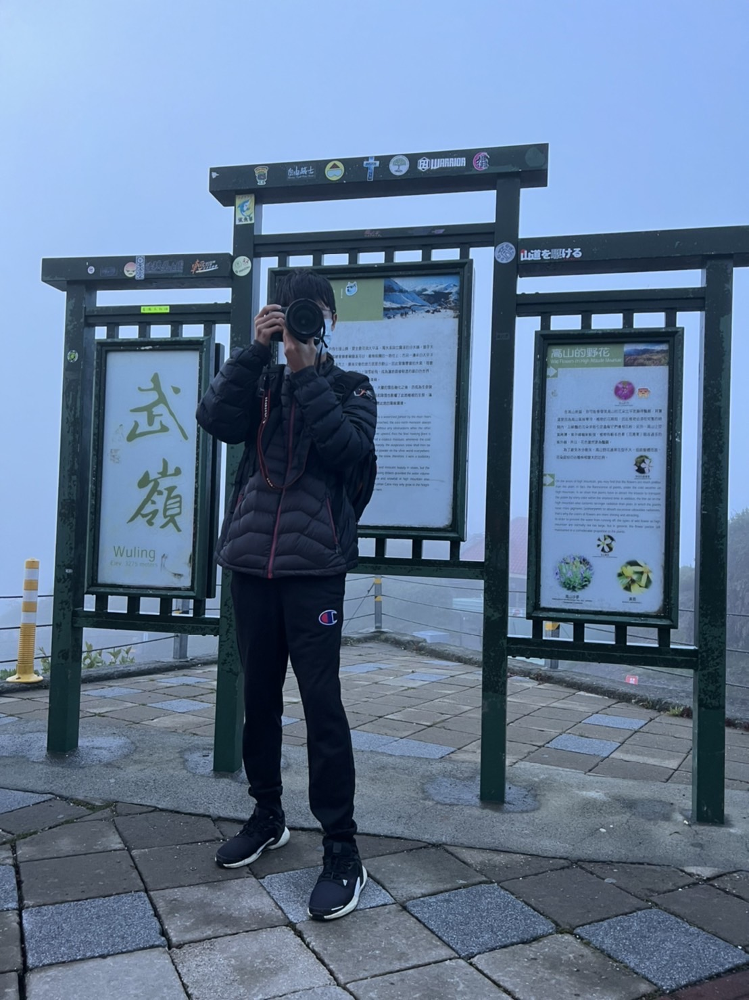

站長介紹

姓名:陳政揚
興趣:看影片 拍照 看棒球
平常除了上課和看書外，也會利用課餘時間跑步，最近迷上拍照，把自己看到漂亮的美景，用相機記錄下來，製造美好的回憶，也會到網路上看人家的作品和教學影片，從中去學習技巧，拍出屬於自己風格的照片
拍照分享連結
平常看影片多半以Youtube為主，偶而有朋友推薦好看的影集或者是電影，才會用Netflix看，以下是我推薦的Youtuber和影片
推薦Youtuber及影片
平常一到晚上，一定會用手機看棒球，最喜歡的球隊是樂天桃猿，投手非常強之外，最著名的就是他們的打擊，是全中華職棒打擊最兇猛的一隊。
最喜歡的打者及投手
我最喜歡的歌手是IU，她雖然是韓國人，但她的知名度可說是紅片全世界，靠著甜美的外型和美妙的歌聲，迷惑了不少人。
最喜歡的歌手